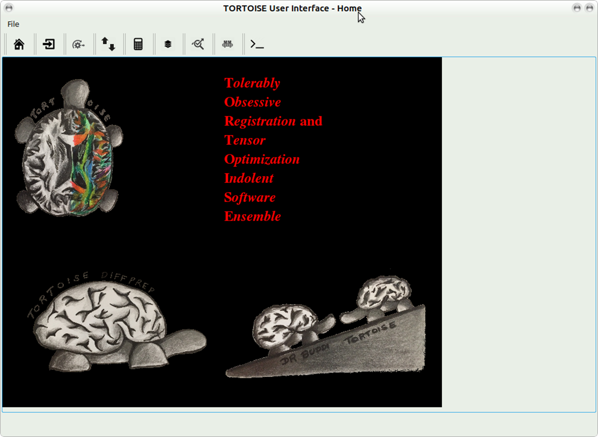

12. TORTOISE GUI¶
Launching GUI: From TORTOISE_V3.0.0/TORTOISE_GUI - please type python TORTOISEGui.py The main screen will appear:
Please pick import icon to go to the import screeen
Please click on the import link above for more details. From the drop down menu please select the data type that you want to import. Click import. If you checked option ?perform gradient check after import? (Quality Control), it will write the NSDEC map and gyph images into your proc folder. Please go to QC for more details
12.1. DIFFPREP GUI¶
Please refer to section 7, step 3 to understand the various paramters that need to be set for DIFFPREP processing.
Registration settings: if you click load you can pick the saved registration settings file in your DIFF_PREP_WORK folder.
If you click on ? it will open additional options that you can pick and it will overwrite some of the options in the registration file selected.

Click on SAVE SETTINGS if you would like to save these new options with a new registration settings file name. Please note: if you pick additional options from the drop down menu, additional tabs will appear where you can set various parameters to suit your data. Please refer to the Click process to process the data and the outputs will be written in the proc folder.
12.2. DR-BUDDI GUI¶
Please refer to section 9,step 3.1 of the manual for details about DRBUDDI processing.
Click ?run? at the bottom of the screen to process data with DR-BUDDI. The final output will be written in a ??_DRBUDDI? folder.
12.3. DIFFCALC GUI¶
Please click on the import link above for more details. Please enter the full path to the new list file and click on ?convert to old DIFFCALC?. The outputs will be written in the ?proc? folder with the tag ??..OF.?

Please refer to https://science.nichd.nih.gov/confluence/display/nihpd/1.3.3+Running+DIFF_CALC for more details on running DIFFCALC. Following are the instructions for using DIFFCALC https://science.nichd.nih.gov/confluence/display/nihpd/DIFF_CALC+Main